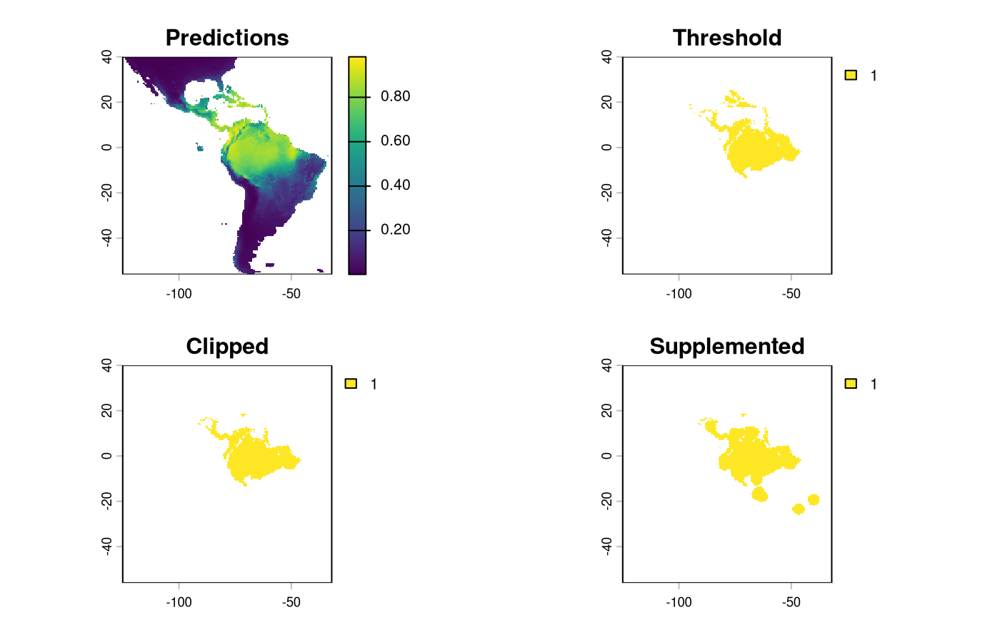

This vignette showcases the different sampling designs applied to the same species.
set up
safeHavens can be installed directly from github.
# remotes::install_github('sagesteppe/safeHavens@IBR') Defining a Species Range or Domain for Sampling
Central to the sampling schemes in safeHavens is a
species range, or domain, for sampling. For example, depending on the
goals of the collection, a curator may want to sample across the entire
range of a species. Alternatively one may be interested in sampling only
a portion of the range, e.g. a country, state, or ecoregion. Either of
these scenarios can be supported by package. Here we will show how to
create a species range from occurrence data, and then use that range for
the various sampling schemes.
Below we will use sf to simply buffer occurrence points
to create a species range across multiple South American nations.
x <- read.csv(file.path(system.file(package="dismo"), 'ex', 'bradypus.csv'))
x <- x[,c('lon', 'lat')]
x <- sf::st_as_sf(x, coords = c('lon', 'lat'), crs = 4326)
x_buff <- sf::st_transform(x, planar_proj) |>
# we are working in planar metric coordinates, we are
# buffer by this many / 1000 kilometers.
sf::st_buffer(125000) |>
sf::st_as_sfc() |>
sf::st_union()
plot(x_buff)
Alternatives to this include a simple convex hull around a species, if it is widespread throughout an area (see ‘Worked Example’ for an example), or masking a binary SDM surface as the domain (see below, and ‘Species Distribution Model’).
Prep a base map
We will use the spData package which uses naturalearth for it’s
world data and is suitable for creating maps at a variety
of resolutions.
x_extra_buff <- sf::st_buffer(x_buff, 100000) |> # add a buffer to 'frame' the maps
sf::st_transform(4326)
americas <- spData::world
americas <- sf::st_crop(americas, sf::st_bbox(x_extra_buff)) |>
dplyr::select(name_long)
Warning: attribute variables are assumed to be spatially constant throughout
all geometries
bb <- sf::st_bbox(x_extra_buff)
map <- ggplot() +
geom_sf(data = americas) +
theme(
legend.position = 'none',
panel.background = element_rect(fill = "aliceblue"),
panel.grid.minor.x = element_line(colour = "red", linetype = 3, linewidth = 0.5),
axis.ticks=element_blank(),
axis.text=element_blank(),
plot.background=element_rect(colour="steelblue"),
plot.margin=grid::unit(c(0,0,0,0),"cm"),
axis.ticks.length = unit(0, "pt"))+
coord_sf(xlim = c(bb[1], bb[3]), ylim = c(bb[2], bb[4]), expand = FALSE)
rm(x_extra_buff, americas)Running the Various Sample Design Algorithms
Now that we have some data which can represent species ranges, we can run the various sampling approaches. The table in the introduction is reproduced here.
| Function | Description | Comp. | Envi. |
|---|---|---|---|
PointBasedSample |
Creates points to make pieces over area | L | L |
EqualAreaSample |
Breaks area into similar size pieces | L | L |
OpportunisticSample |
Using PBS with existing records | L | L |
KMedoidsBasedSample |
Use ecoregions or STSz for sample | L | M |
IBDBasedSample |
Breaks species range into clusters | H | M |
PolygonBasedSample |
Using existing ecoregions to sample | L | H |
EnvironmentalBasedSample |
Uses correlations from SDM to sample | H | H |
Note in this table ‘Comp.’ and ‘Envi.’ refer to computational and environmental complexity respectively, and range from low (L) through medium to high.
Point Based Sample
PointBasedSample simply samples a grid of regularly
space points across the domain, and assigns the areas nearest to each
point to a cluster. It will work very well for common species without
many gaps in their distributions.
pbs <- PointBasedSample(x_buff, reps = 50, BS.reps = 333)
pbs.sf <- pbs[['Geometry']]
pbs.p <- map +
geom_sf(data = pbs.sf, aes(fill = factor(ID))) +
# geom_sf_label(data = pbs.sf, aes(label = ID), alpha = 0.4) +
labs(title = 'Point') +
coord_sf(expand = F)
pbs.p
Equal Area Sample
Perhaps the simplest method which is offered in
safeHavens is EqualAreaSample. It creates many
points, pts defaulting to 5000, within our target domain
and subjects them to k-means clustering where the groups are specified
by n, our target number of collections. The individual
points assigned to each group are merged into polygons which ‘take’ up
all of the geographic space, and are intersected back to the species
range, and the area of each polygon is then measured. This process will
be ran a few times, defaulting to 100 reps, and the set of
polygons which was created during these reps with the smallest variance
in polygon size will be selected and returned.
This differs from point based sampling in that the above instance, we start with a few regularly spaced points to grow from, here we take a step back and by using many points let the clusters grow themselves to similar sizes.
eas <- EqualAreaSample(x_buff, planar_proj = planar_proj)
eas.p <- map +
geom_sf(data = eas[['Geometry']], aes(fill = factor(ID))) +
# geom_sf_label(data = eas.sf, aes(label = ID), alpha = 0.4) +
labs(title = 'Equal Area') +
coord_sf(expand = F)
eas.p
The results look quite similar to point based sample.
Opportunistic Sample
Users may be interested in how they can embed their existing
collections into a sampling framework. The function
OpportunisticSample makes a few minor modifications to the
point based sample to and designs it around existing collections It
doesn’t always work exceptionally, especially when a couple collections
are very close to each other, but as the old saying goes “a bird in hand
is worth two in the bush”. As we have observed, the previous sampling
schemes have somewhat similar results - so we used the
PointBasedSample as the framework to embed into this
function.
exist_pts <- sf::st_sample(x_buff, size = 10) |>
sf::st_as_sf() |> # ^^ randomly sampling 10 points in the species range
dplyr::rename(geometry = x)
os <- OpportunisticSample(polygon = x_buff, n = 20, collections = exist_pts, reps = 50, BS.reps = 333)
os.p <- map +
geom_sf(data = os[['Geometry']], aes(fill = factor(ID))) +
# geom_sf_label(data = os.sf, aes(label = ID), alpha = 0.4) +
geom_sf(data = exist_pts, alpha = 0.4) +
labs(title = 'Opportunistic') +
coord_sf(expand = F)
os.p
Here, the grids have been aligned around the existing collections. The results from this function can lead to some oddly shaped clusters, but a bird in hand is worth two in the bush.
Isolation by Distance Based Sample
Isolation by Distance is the fundamental idea behind this package. This function explicitly uses IBD to develop a sampling scheme, and does not obfuscate it with any other parameters.
Note that this function requires a raster, rather than vector, input.
files <- list.files(
path = file.path(system.file(package="dismo"), 'ex'),
pattern = 'grd', full.names=TRUE )
predictors <- terra::rast(files)
x_buff.sf <- sf::st_as_sf(x_buff) |>
dplyr::mutate(Range = 1) |>
sf::st_transform( terra::crs(predictors))
# and here we specify the field/column with our variable we want to become an attribute of our raster
v <- terra::rasterize(x_buff.sf, predictors, field = 'Range')
# now we run the function demanding 20 areas to make accessions from,
ibdbs <- IBDBasedSample(
x = v,
n = 20,
fixedClusters = TRUE,
template = predictors,
planar_proj = planar_proj
)
ibdbs.p <- map +
geom_sf(data = ibdbs[['Geometry']], aes(fill = factor(ID))) +
# geom_sf_label(data = os.sf, aes(label = ID), alpha = 0.4) +
labs(title = 'IBDistance') +
coord_sf(expand = F)
## for the sake of comparing areas below, we will intersect this to the same extents as the earlier surfaces.
ibdbs_crop <- sf::st_intersection(ibdbs[['Geometry']], sf::st_union(x_buff.sf))
ibdbs.p2 <- map +
geom_sf(data = ibdbs_crop, aes(fill = factor(ID))) +
# geom_sf_label(data = os.sf, aes(label = ID), alpha = 0.4) +
labs(title = 'IBDistance') +
coord_sf(expand = F)
ibdbs.p
Because these data were processed from a raster, they have 90 corners and large straight lines, representing raster tiles. Regardless, it is evident that the borders of the clusters are more natural looking than in the previous (and future) sampling schemes, and we have better matching of the individual polygons into single classes.
Isolation by resistance
This workflow requires a couple steps to enact. We have a vignette
dedicated to detailing them at Isolation by Resistance -
check it out! Here we will just load the data that you will get if you
run that vignette.
ibr <- sf::st_read(
file.path(system.file(package="safeHavens"), 'extdata', 'IBR.gpkg'),
quiet = TRUE)
ibr.p <- map +
geom_sf(data = ibr, aes(fill = factor(ID))) +
labs(title = 'IBResistance') +
coord_sf(expand = F)
[1m
[22mCoordinate system already present.
[36mℹ
[39m Adding new coordinate system, which will replace the existing one.Polygon Based Sample
This is the most commonly implemented method for guiding native seed collection in North America. However, I am not sure exactly how practitioners all implement it, and whether the formats of application are consistent among practitioners! For these reasons a few different sets of options are supported for a user.
For general usage, two parameters are always required x
which is the species range as an sf object, and ecoregions,
the sf object containing the ecoregions of interest. The
ecoregions file does not need to be subset to the range of
x quite yet - the function will take care of that.
Additional arguments to the function include as usual n to
specify how many accession we are looking for in our collection. Two
additional arguments relate to whether we are using Omernik Level 4
ecoregions data or ecoregions (or biogeographic regions) from another
source. These are OmernikEPA, and
ecoregion_col, if you are using the official EPA release of
ecoregions then both of these are optional, however if you are not using
the EPA product than both should be supplied - but only the
ecoregion_col argument is totally necessary. This column
should contain unique names for the highest resolution level ecoregion
you want to use from the data set, for many data sets, such as our
example we call ‘neo_eco’ this may be the only field with ecolevel
information!
neo_eco <- sf::st_read(
file.path(system.file(package="safeHavens"), 'extdata', 'NeoTropicsEcoregions.gpkg'),
quiet = TRUE) |>
dplyr::rename(geometry = geom)
head(st_drop_geometry(neo_eco)[,c('Provincias', 'Dominio', 'Subregion')])
Provincias Dominio Subregion
1 Araucaria Forest province Parana Chacoan
2 Atacama province <NA> South American Transition Zone
3 Atlantic province Parana Chacoan
4 Bahama province <NA> Antillean
5 Balsas Basin province Mesoamerican Brazilian
6 Caatinga province Chacoan Chacoan
x_buff <- sf::st_transform(x_buff, sf::st_crs(neo_eco))
ebs.sf <- PolygonBasedSample(x_buff, zones = neo_eco, n = 20, zone_key = 'Provincias')
# crop it to the other objects for plotting
ebs.sf <- st_crop(ebs.sf, bb)
ebs.p <- map +
geom_sf(data = ebs.sf , aes(fill = factor(allocation))) +
labs(title = 'Ecoregion') +
coord_sf(expand = F)This output differs from the others we will see, here we have depicted the number of collections to be made per ecoregion. Because the number of ecoregions is greater than our requested sample size, the return object can only take on two values - no collections, or one collection.
Environmental Based Sample
The EnvironmentalBasedSample can only be used if you
have species distribution model data. We have included the ouputs of the
vignette ‘Species Distibution Model’ with the package so they are
available to this vignette.
load the SDM predictions
Here we load the results of the sdm processing from the package data.
sdModel <- readRDS(
file.path(system.file(package="safeHavens"), 'extdata', 'sdModel.rds')
)
sdModel$RasterPredictions <- terra::unwrap(sdModel$RasterPredictions)
sdModel$Predictors <- terra::unwrap(sdModel$Predictors)
sdModel$PCNM <- terra::unwrap(sdModel$PCNM)And load the threshold predictions
sdm <- terra::rast(
file.path(system.file(package="safeHavens"), 'extdata', 'SDM_thresholds.tif')
)
terra::plot(sdm)
Once these data are loaded into R, we will scale the rasters (using
RescaleRasters) which will serve as surfaces to predict
from (this is also done above!), then we will run the algorithm
(EnvironmentalBasedSample). However, before we run the
algorithm we will need to create a directory (also called a ‘folder’),
on our computers to save the results from the function
EnvironmentalBasedSample. Whereas earlier in this vignette
we showcased that the functions generated the species distribution
model, and us saving the results were a two stage process (e.g. to
create the SDM and associated products we used: elasticSDM,
PostProcessSDM, and RescaleRasters, before
finally saving relevant data with writeSDMresults), this
function produces both the product and writes out ancillary data
simultaneously.
This approach was chosen as this function is only writing out four
objects: 1) the groups as vector data
2) and the groups as raster data
3) the k-nearest neighbors (knn) model used to generate these
clusters
4) the confusion matrix associated with testing the knn model
rr <- RescaleRasters( # you may have already done this!
model = sdModel$Model,
predictors = sdModel$Predictors,
training_data = sdModel$TrainData,
pred_mat = sdModel$PredictMatrix
)
# create a directory to hold the results from EBS real quick.
# we will default to placing it in your current working directory.
getwd() # this is where the folder is going to be created if you do not run the code below.
[1] "/home/runner/work/safeHavens/safeHavens/vignettes"
p <- file.path(path.expand('~'), 'Documents') # in my case I'll dump it in Documents real quick, this should work on
# optional, intentionally create a directory to hold results
# dir.create(file.path(p, 'safeHavens-Vignette'))
planar_proj <- "+proj=laea +lat_0=-15 +lon_0=-60 +x_0=0 +y_0=0 +datum=WGS84 +units=m +no_defs"
ENVIbs <- EnvironmentalBasedSample(
pred_rescale = rr$RescaledPredictors,
write2disk = FALSE, # we are not writing, but showing how to provide some arguments
path = file.path(p, 'safeHavens-Vignette'),
taxon = 'Bradypus_test',
f_rasts = sdm,
coord_wt = 2,
n = 20,
lyr = 'Supplemented',
fixedClusters = TRUE,
n_pts = 500,
planar_proj = planar_proj,
buffer_d = 3,
prop_split = 0.8
)
## for the sake of comparing areas below, we will intersect this to the same extents as the earlier surfaces.
ENVIbs_crop <- sf::st_intersection(ENVIbs[['Geometry']], sf::st_union(x_buff.sf))
Warning: attribute variables are assumed to be spatially constant throughout
all geometries
ENVIbs.p <- map +
geom_sf(data = ENVIbs_crop, aes(fill = factor(ID))) +
#geom_sf_label(data = ENVIbs, aes(label = ID), alpha = 0.4) +
labs(title = 'Environmental') +
coord_sf(expand = FALSE)
[1m
[22mCoordinate system already present.
[36mℹ
[39m Adding new coordinate system, which will replace the existing one.
ENVIbs.p
The function EnvironmentalBasedSample can take any of
the three binary rasters created by PostProcessSDM as
arguments for the template. Here we showcase the different results from
using each of them.

These plots are able to showcase the difference in results depending on which of the three input rasters are utilized. As with all of the sampling schemes, results vary widely based on the spatial extents which the functions are applied to. Using the SDM output which have undergone thresholding results in the largest classified area. At first glance the results may seem very different, but if you look at central america, they are largely consistent, as they are near the Andes; large differences do exist in the Amazon Basin, but even there some alignment between the systems is evident. Accordingly, the surface used for a species should match some evaluation criterion.
Using the threshold raster surface is a very good option if we do not want to ‘miss’ too many areas, whereas the clipped and supplemented options may be better suited for scenarios where we do not want to draw up clusters, which lack any populations which can be collected from.
Comparision of different sampling schemes
So, we have some maps for you to look at! They all looked relatively similar to me when plotted one after another, let’s plot them all simultaneously and see if that’s still the case.
pbs.p + eas.p + os.p + ibdbs.p2 + ibr.p + ENVIbs.p +
plot_layout(ncol = 3)
The geographic based samples (here Point, Equal Area, Opportunistic, and IBE) are quite similar. In my mind isolation by distance (IBD) show the biggest different, it makes the most sense by splitting sampling areas along naturally occurring patches of the species range.
The application of PolygonBasedSample to the data are
difficult to evaluate in the same sense as the other data sets, but it
was able to identify the desired regions for sampling. We do not show it
in this pane.
Isolation by Resistance is similar to IBD, however it makes fewer splits in Central America, instead picking up on them in the Peru.
Relative to IBR Isolation by Environment tends to split locations
across the Andes and the NW coastal regions of South America. The ranges
are relatively contigious - enough to sensibly sample from. Contiguity
of ranges in this approach can be controlled with the
coord_wt argument.